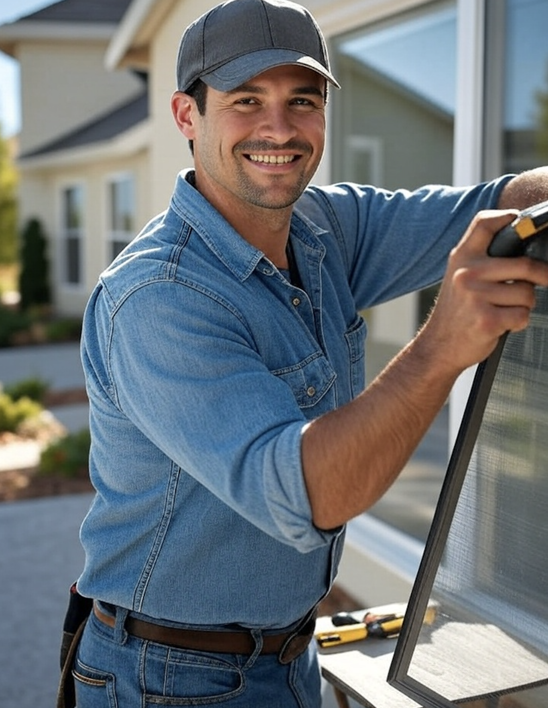

Reliable Screen Repair Services

Welcome to Screen Fix Pro: Local experts keeping bugs out and fresh air in.
Fix torn window screens, bent door screens, or rescreen porches with our fast, affordable, professional on-site service.
Serving Bloomington, Lakeville, Burnsville, and nearby areas—helping Minnesota homeowners enjoy hassle-free, bug-free living.
Our Services
- Window Screen Repair & Replacement: Fix tears, holes, or frames for any size using durable, high-quality mesh.
- Door Screen Repair: Repair or replace screens on patio, storm, or entry doors for smooth function.
- Porch & Patio Enclosures: Rescreen porches, patios, or gazebos; upgrade to pet-resistant or solar-blocking options.
Why Choose Us?
- Local & Convenient: Lakeville/Burnsville-based mobile service—we come to you, no transport needed.
- Affordable Pricing: Competitive rates, no hidden fees; costs vary by size and materials. Free quotes available.
- Quality Materials: Premium fiberglass, aluminum, or specialty meshes built for Minnesota's weather extremes.
- Fast Turnaround: Prompt service to get your screens fixed quickly and enjoy the outdoors.
- Satisfaction Guaranteed: Warranty on all repairs and installations.
Request a Free Quote Today
Fill out the form below to get started and we'll contact you to schedule a no-obligation assessment.
Contact Us
Questions? Email us at info@screenfixpro.com